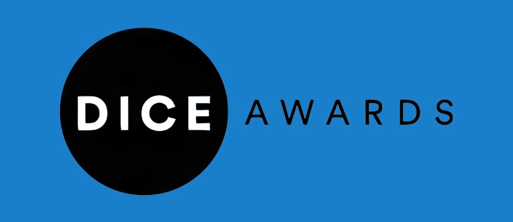

The 28th Annual D.I.C.E. Awards: Honoring Gaming Excellence in 2024

The 28th Annual D.I.C.E. Awards, organized by the Academy of Interactive Arts & Sciences (AIAS),
are set to honor the most outstanding achievements in the video game industry for the year 2024.
Scheduled for February 13, 2025, at the Aria Resort & Casino in Las Vegas, Nevada, this prestigious
event will be hosted by Greg Miller of Kinda Funny Games and Stella Chung of IGN, both returning for
another year.
Scroll down to read more.
Leading Nominations
Topping the list with six nominations each are "Astro Bot," "Helldivers 2," and "Indiana Jones and the Great Circle." Close contenders include "Balatro" and "Senua's Saga: Hellblade II," each securing five nominations. Notably, Sony Interactive Entertainment leads as the top publisher, with five games amassing a total of fifteen nominations.Lifetime Achievement Award
This year, the AIAS will honor Don James, former Executive Vice-President of Nintendo of America, with the Lifetime Achievement Award. James played a pivotal role in the creation of the Entertainment Software Rating Board (ESRB) and the Interactive Digital Software Association, now known as the Entertainment Software Association (ESA), which is renowned for organizing the E3 trade show.Nominees by Category
Game of the Year
- "Astro Bot" (Team Asobi, Sony Interactive Entertainment)
- "Balatro" (LocalThunk, PlayStack)
- "Black Myth: Wukong" (Game Science)
- "Helldivers 2" (Arrowhead Game Studios, Sony Interactive Entertainment)
- "Indiana Jones and the Great Circle" (MachineGames, Bethesda Softworks)
Outstanding Achievement in Game Design
- "Animal Well" (Shared Memory, Bigmode)
- "Astro Bot" (Team Asobi, Sony Interactive Entertainment)
- "Balatro" (LocalThunk, PlayStack)
- "Helldivers 2" (Arrowhead Game Studios, Sony Interactive Entertainment)
- "UFO 50" (Derek Yu, Spelunky creator)
Outstanding Achievement in Art Direction
- "Astro Bot" (Team Asobi, Sony Interactive Entertainment)
- "Black Myth: Wukong" (Game Science)
- "Indiana Jones and the Great Circle" (MachineGames, Bethesda Softworks)
- "The Plucky Squire" (All Possible Futures, Devolver Digital)
- "Senua's Saga: Hellblade II" (Ninja Theory, Xbox Game Studios)
Outstanding Achievement in Character
- Watcher, "1000xResist" (Sunset Visitor, Fellow Traveller Games)
- Yuffie Kisaragi, "Final Fantasy VII Rebirth" (Square Enix)
- Dr. Henry "Indiana" Jones, "Indiana Jones and the Great Circle" (MachineGames, Bethesda Softworks)
- Indika, "Indika" (Odd-Meter, 11 Bit Studios)
- Senua, "Senua's Saga: Hellblade II" (Ninja Theory, Xbox Game Studios)
Action Game of the Year
- "Batman: Arkham Shadow" (Rocksteady Studios, Warner Bros. Interactive Entertainment)
- "Black Myth: Wukong" (Game Science)
- "Call of Duty: Black Ops 6" (Treyarch, Activision)
- "Helldivers 2" (Arrowhead Game Studios, Sony Interactive Entertainment)
- "Stellar Blade" (Shift Up Corporation, Sony Interactive Entertainment)
Adventure Game of the Year
- "1000xResist" (Sunset Visitor, Fellow Traveller Games)
- "Animal Well" (Shared Memory, Bigmode)
- "Indiana Jones and the Great Circle" (MachineGames, Bethesda Softworks)
- "The Legend of Zelda: Echoes of Wisdom" (Nintendo, Grezzo)
- "Prince of Persia: The Lost Crown" (Ubisoft Montpellier)
Family Game of the Year
- "Astro Bot" (Team Asobi, Sony Interactive Entertainment)
- "Cat Quest III" (The Gentlebros, Kepler Interactive)
- "Little Kitty, Big City" (Double Dagger Studio)
- "The Plucky Squire" (All Possible Futures, Devolver Digital)
- "Super Mario Party Jamboree" (NDcube, Nintendo)
Fighting Game of the Year
- "Blazing Strike" (RareBreed Makes Games, Aksys Games)
- "Dragon Ball: Sparking! Zero" (Bandai Namco Entertainment)
- "Mortal Kombat 1: Khaos Reigns" (NetherRealm Studios, Warner Bros. Interactive Entertainment)
- "Tekken 8" (Bandai Namco Entertainment)
- "Underdogs" (Giant Enemy Crab)
- Racing Game of the Year
- "F1 24" (Codemasters, EA Sports)
- "MotoGP 24" (Milestone S.r.l.)
- "Night-Runners Prologue" (Level 91 Entertainment)